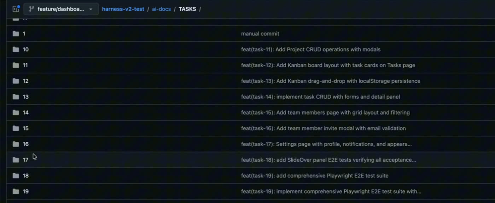
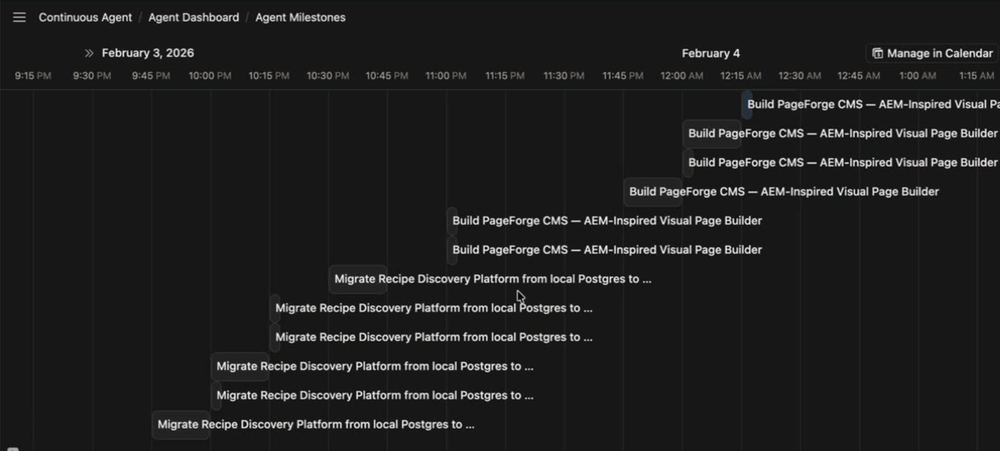
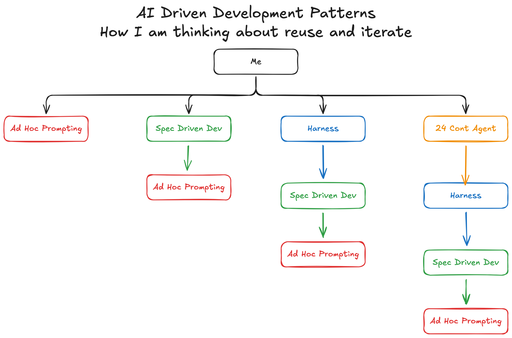

It is one diagram in four parts and a lesson. Each part links to its moment in the video if you would rather watch.
First published on LinkedIn on February 5, 2026. Rewritten for this site in October 2026. Examples: harness-v2-test for a harness run, continuous-agent for the 24/7 agent.
What changed since February
I did the refactor from part 5, at least for the harness. In April 2026 my continuous agent gained a harness execution pattern (commit 9a85f70, April 11). The same harness now runs two ways: standalone from one command, or as a goal the 24/7 agent picks up and drives. From the repo's HARNESS.md:
npm run harness -- --name generic \
--prompt ./input/my-app/PROMPT.md \
--target /tmp/my-appThat is the "usable by itself, or inside the next layer up" rule from part 5, in code. Two months later I also pushed reuse one level lower, to skills, in Two AI Skills for Team Enablement.
1. Ad hoc prompting is where we all start
Ad hoc prompting is where I started, and I think where we all start. A good form of it is just me talking to AI. You want to give it a very good first prompt. Sometimes that's me rambling into voice to text, and AI gives me a bunch of work back.
The more advanced version: ramble the same ramble into multiple models, have them compare each other's work, then have one merge it together, keeping the best part of each output. I later did exactly that with four frontier models on my portfolio site, in Four Frontier Models, One Prompt.
In the diagram, ad hoc prompting is red. There is a reason everything is color coded, and it shows up at the end.
Watch this part0:23 Ad hoc prompting
2. Spec-driven development: specs at the project and task level
The next iteration is spec-driven development, which looks like specs. At the project level, specs cover the why, the what and the how, divided up into the when. That's where overall design principles live, so a million tasks all do things the same way.
In my version, each task also gets its own detailed packet, from functional requirements to technical design. When an agent executes a task, and there are many of them, it is very clear on what to do. You review the specs, you produce the specs, and the specs give AI consistency. This alone is enough acceleration to completely change the way we work.
It isn't only for code. I use the same idea to configure a VM: plan every step up front, then have AI run it through with me, checking each command before it runs.
Along the way I started prompt logging. I keep a log of mostly what I'm doing, and AI summarizes its response and action in a line. That is how I keep track of my own work. I said on camera it would matter in a big way, and it did two months later, in the Conversation Logger skill.
One thing I want to highlight: spec-driven development builds on top of ad hoc prompting. In the diagram, the green box sits on a red one.
Watch this part1:20 Spec-driven development2:31 Specs for a VM3:06 Prompt logging
3. A harness is an orchestration layer on top of the specs
Then I thought, let's build a harness. My definition: you still have the project-level architecture blueprint, the why, what, how and when. The task breakdown happens ahead of time, with task-level specs planned out and room for defects. Then the tasks execute in sequence without me. By hand, each task takes me 10 to 20 minutes of sitting with it. The harness strings 20 of them together.

There are a lot of learnings here. It doesn't work the first time, kind of works the second time, and by the fifth run it's pretty good. The trick is to think about the input and the output. The input isn't a single prompt if you are going to do that much work. It's what I call a prompt packet: a large, verbose set of documentation, like the packet you exit a design phase with in consulting. So there are two inputs, the packet and the harness, and one output.
When the output is wrong, I don't fix the output. I fix the input or the harness, or have AI figure out how to make the next run better. After enough rounds of running, fixing and analyzing, you have a pretty good harness.
What I'm realizing now is that a harness is an orchestration layer on top of spec-driven development. It's a big loop with more intelligence, and it validates the output, so I don't want to oversimplify. But underneath, it runs the same spec-driven development, and that runs on prompting. Blue on green on red. There are reusable parts in there.
Watch this part3:54 What a harness is5:03 Input and output6:01 An orchestration layer
4. A continuous agent runs all the time
My fourth project, the one I was building in February, is a continuous agent. The harness builds a bunch of stuff when I start it. The continuous agent does stuff all the time. It finds different things to work on, and it writes its progress to Notion, so it's no longer a markdown file I'm reading. It's a human-friendly interface: when I wake up in the morning, I can see exactly what AI worked on overnight. It can also improve itself, build new Claude skills and run skills that you built.

And I did this one wrong. I built the continuous agent by referencing my earlier work, not reusing it.
Watch this part6:58 The continuous agent7:43 "I did this wrong"
5. Reuse the layer below, don't rebuild it
Here is the whole board. Every pattern sits on the one before it. The 24/7 agent is orange on blue on green on red.

My mistake is easy to see once it's drawn. I rebuilt the bottom piece four separate times. AI made rebuilding feel easy, so I'd reference my old code and rebuild fresh, when I should have understood the modular pieces and reused them. Pick a piece and count:
How the pieces get built
Trace one piece
Ad hoc prompting
- Ad hoc promptingbuilt here
Spec-driven dev
- Spec-driven devbuilt here
- Ad hoc promptingbuilt here
Harness
- Harnessbuilt here
- Spec-driven devbuilt here
- Ad hoc promptingbuilt here
24/7 continuous agent
- 24/7 continuous agentbuilt here
- Harnessbuilt here
- Spec-driven devbuilt here
- Ad hoc promptingbuilt here
Built the way I did it, the four patterns hold ten pieces, and ad hoc prompting is built four times. Reusing the layer below, each of the four pieces is built once.
From me rambling, to specs, to harnesses, to continuous agents, they could all be reusing the same thing. Each piece should work alone or stacked. Spec-driven development should be usable by itself. I can run it on its own, run it with a harness, or run it with a 24-hour agent that runs the harness. Each layer should reuse the layer below instead of referencing it.
So that's my takeaway: I have a lot of AI-driven refactoring to do, and I'd rather you didn't fall into the same pit. Build for reuse from the start, even when rebuilding with AI feels fast. If you've built your own stack of patterns, I'd like to know which layer you made reusable first, and whether it held up when the next layer arrived.
Watch this part8:42 The lesson